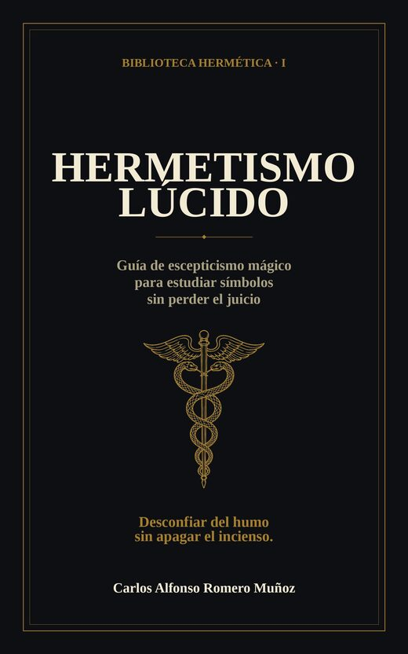
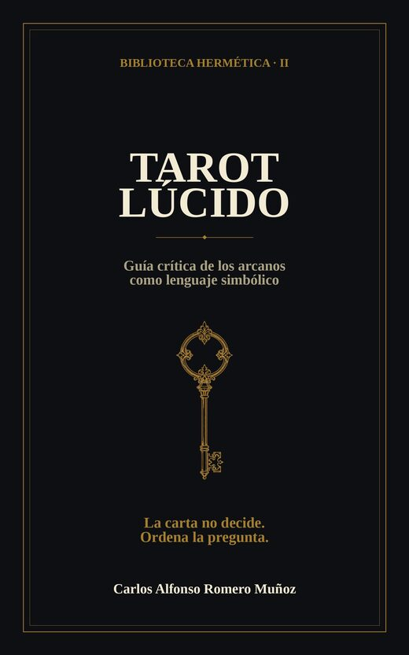
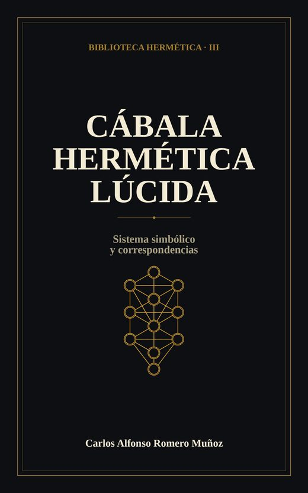
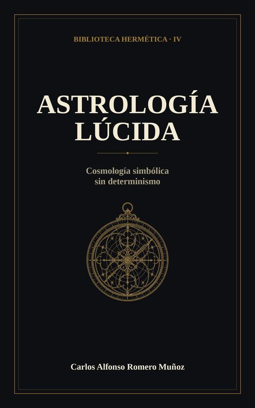
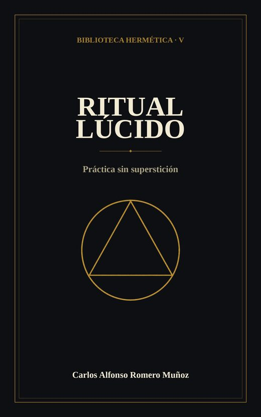
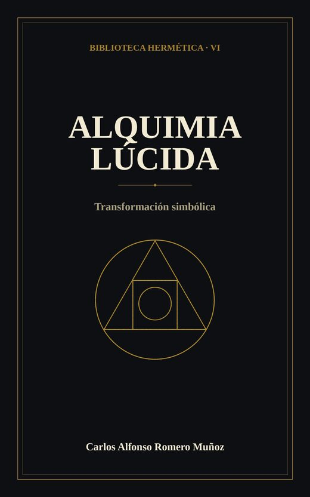

Carlos Alfonso Romero Muñoz
Autor, compositor y desarrolladorEconomista y contador · educación Montessori, símbolos, música y código.
Libros
Narrativa
Biblioteca Hermética

Hermetismo lúcido Guía de estudio esotérico para quien ama el misterio y desconfía de las certezas fáciles. Desconfiar del humo sin apagar el incienso. Ver en Amazon →
Tarot lúcido Guía crítica del tarot como lenguaje simbólico, no como oráculo. La gramática Golden Dawn explicada con lucidez. Ver en Amazon →
Próximamente

Cábala hermética lúcida El sistema de las sefirot y las correspondencias, leído como gramática simbólica. Próximamente
Astrología lúcida Cosmología simbólica, sin determinismo ni horóscopos de feria. Próximamente
Ritual lúcido La práctica ritual estudiada con rigor, sin superstición. Próximamente
Alquimia lúcida La transformación simbólica de la materia y del alma.Música
0:000:00
Código
Contacto